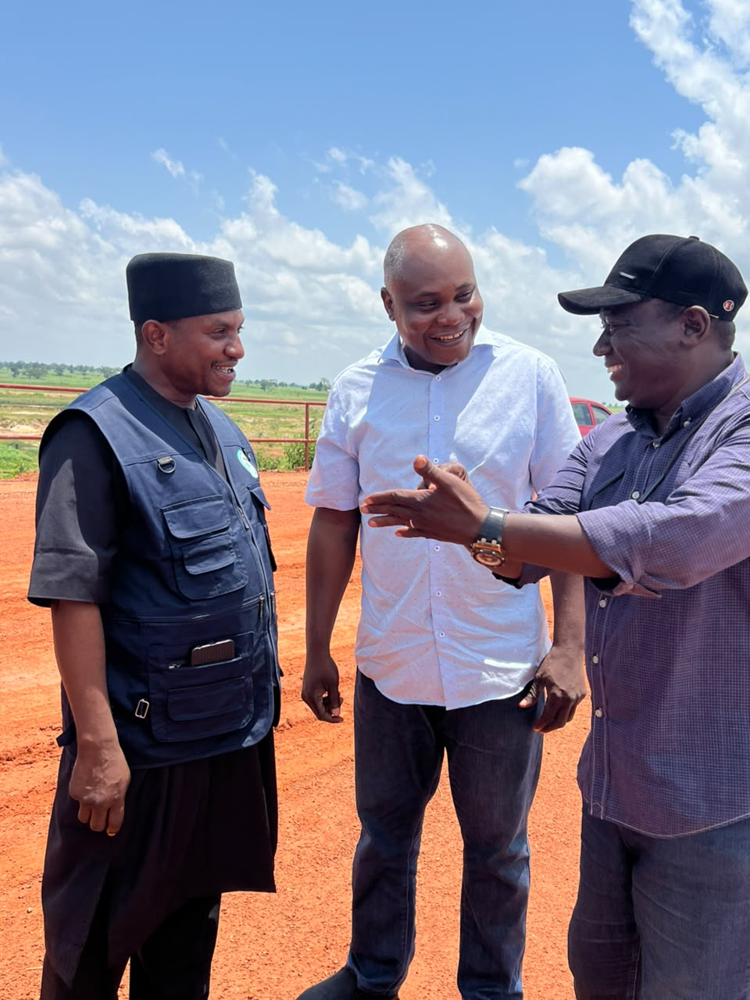

SPIN Project: Federal Team Inspects Danja Dam, Commends Katsina Govt's Commitment
By SULAIMAN AHMED MISAU, Katsina — New Nigerian Newspaper
A high powered delegation from Federal Project Monitoring Unit of the Sustainable Power and Irrigation for Nigeria (SPIN) Project were in Katsina State to inspect Danja Dam in Danja local government area of the state as part of ongoing preparations for the Project implementation.
Headed by Engineer Tawo Ogekan, the delegation arrived in Katsina at the weekend for inspection in collaboration with the State under the Project Coordinator, Engineer Shamsuddeen Sulaiman who led the two teams to the site.
The aim of the visit was to make proper assessments of the structural integrity and safety condition of the Dam ahead of proposed intervention under Sustainable Power and Irrigation for Nigeria (SPIN) Project.
Members of the Federal Project Monitoring team are: Professor Donald; Engineer M.O Offie; Engineer Usman Abubakar and Engineer Charles Okeke.
Other members of the SPIN Project team from Katsina who participated in the exercise were Engineer Mustapha Dan Malam; Engineer Aminu Lawal Musa; Usman Adamu and Aisha Sifiyanu Masari.
"During the exercise, members of the Dam Safety Review Panel of Experts carried out a comprehensive assessment of the dam, inspecting both its internal and external structures to determine its current condition, identify potential safety concerns and establish the measures required to ensure that the facility remains safe, functional and fit for its intended purpose," the Katsina State Project Coordinator, Engineer Shamsudden Sulaiman said.
Engineer Sulaiman expressed his appreciation to the Federal Project Monitoring Unit and the Dam Safety Review Panel of Experts for undertaking the inspection.
According to him, recommendations from the assessment would contribute tremendously to ensure safety and sustainability of the dam as well as enable People of Katsina State to derive maximum benefits from the facility.
Engineer Shamsuddeen Sulaiman commended Governor Dikko Umar Radda, for his continued commitment to improve the livelihoods of the people of the state, especially through promotion of dry-season farming and irrigation development.
Engineer Shamsuddeen commended the State commissioner of water resources, Alhaji Mannir Ayuba Sullubawa for support and administrative counseling to ensure smooth implementation of the project in Katsina State.
Speaking, leader of the Federal delegation, Engineer Tawo Ogekan also commended Katsina State Government under the leadership of Governor Dikko Umaru Radda for its support and commitment to the implementation of the SPIN Project.
Engineer Ogekan emphasised that, Katsina state government's cooperation and demonstration of commitment were very important to the successful delivery of the project.
Engineer Tawo Ogekan reiterated the need for stronger and effective collaboration between Federal and Katsina State Governments, technical experts as well as other stakeholders who would be critical to achieving the desired results.
Engineer Ogekan said the inspection of Danja Dam was particularly important because dam safety remained a key priority of the SPIN Project, stressing that, "ensuring the structural soundness and safe operation of dams is essential to protecting communities while maximizing the economic benefits of water infrastructure."
The Sustainable Power and Irrigation for Nigeria Project was a World Bank-supported initiative of the Federal Government designed to strengthen dam safety and improve the management of water resources for irrigation and hydropower in selected parts of Nigeria.
It was consequently designed to address Nigeria's interconnected water, food and energy challenges by improving irrigation and drainage services, strengthening dam safety and water-resources management, and supporting hydropower development and planning.
However, the Federal Project Monitoring Unit maintained its commitment to continued engagement with the Katsina State Government and other stakeholders as efforts intensify towards the successful implementation of the SPIN Project.